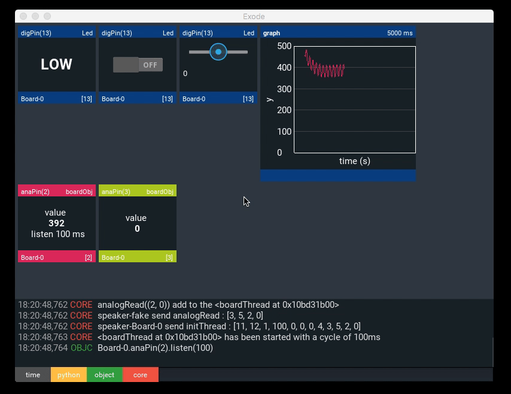
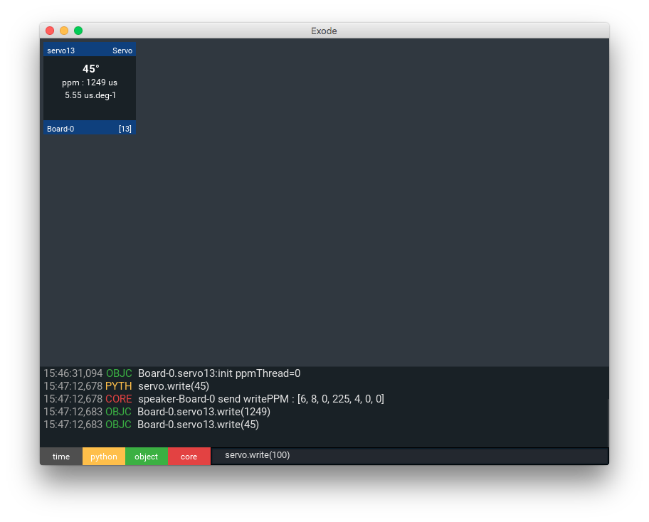
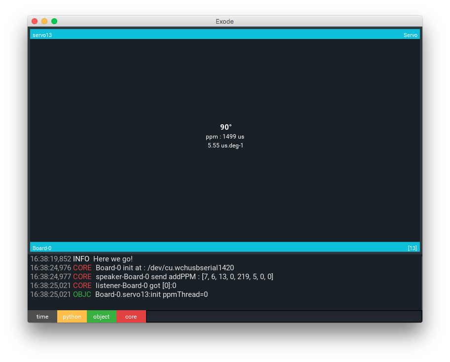
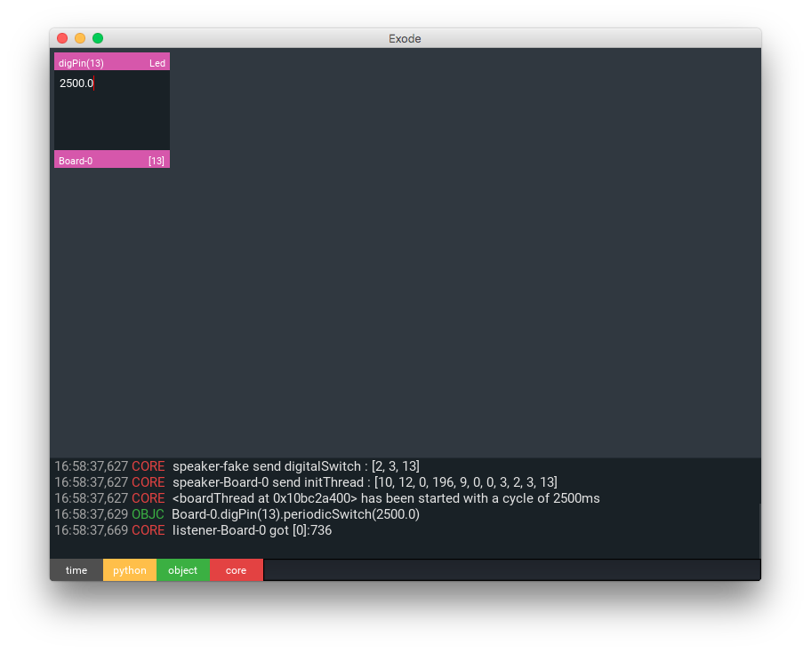
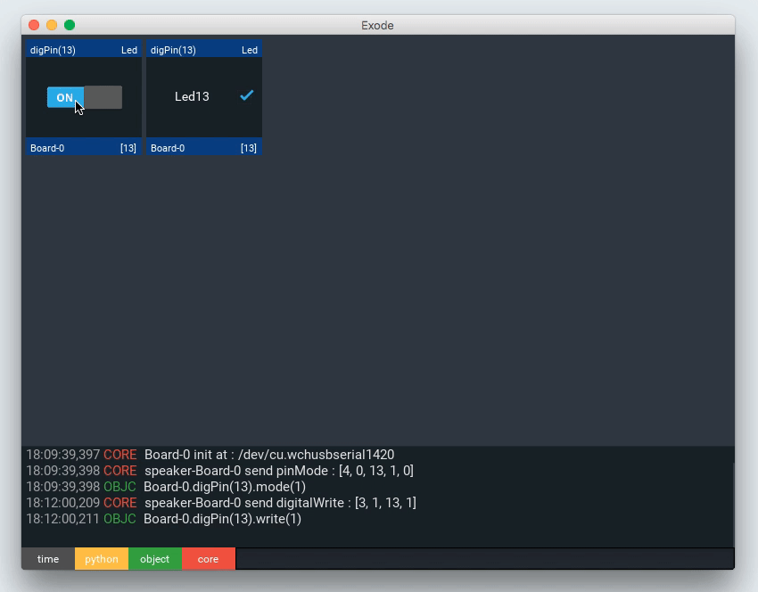

Introduction
Well, What is it ?
Blink two led asynchronously
from Exode import *
uno = Board('/dev/tty.HC-06-DevB')
led13 = Led(13)
led14 = Led(14)
uno.add(led13)
uno.add(led14)
led13.blink(250)
led14.blink(500)
Exode is a Python’s library for communication between Arduino microcontroller boards and a connected computer. Write Python script and take control on your board using a serial IO.
Fast and Intuitive
Exode was designed to simplify the development of Arduino projects. The library takes advantages from the clear and light Python’s syntax.
Once your Arduino connected to your device (computer, Rasberry Pi, smartphone ..) using a serial IO (usb/bluetooth), you’re now allowed to have remote interactions with your board.
You microcontroller become a simple slave, let your computer process the most complex tasks. You may add artificial intelligence algorithm in your projects…
Powerfull tools
Many of Arduino components are implemented in Exode, that’s way you can directly manipulate them with Python.
Exode use event-driven programming to manage the interactions between the differents components plugged on your board, or your computer.
Furthermore, the Exode’s kernel is based on an asynchronous processes, greatly simplifying your project !!
User Interface

Interact with your board easily through UI components :
- Visualize data
- Send data
- Event-driven applications
Get Started
You’re going to need :
- An Arduino board
- Linux or OS X (Window may work)
- Python 3
- Arduino Software (only to install Exode on your board)
Install Exode on your board
First of all, you’ve to load Exode on your device. That’ll be the only time that you’ll have to compile a source code on your board.
Download ExodeArduinoCore sources or
git clone https://github.com/sne3ks/ExodeArduinoCore.gitOpen Arduino Software and install ArduinoThread library.
Open
ExodeArduinoCore\main\main.inowith the Arduino Software, verify and load the code on your board
Install Exode on your computer
- simple
sudo pip3 install Exode
If pip3 is not installed, go here
Found the path to your Arduino
user$ python3
>> from Exode import *
>> BOARD.search()
>> ['/dev/tty.wchusbserial1420' , '/dev/tty.HC-06-DevB']
>>
If you use Osx or Linux, you’ve to know that a device connected to your computer
is interpreted like a file for your OS. And it’s through this “file” that Exode communicates
with the Arduino board. You can find this file into this repertory \dev
But you’re really lucky today because Exode can find the path of your board like a good guy, notice that you’ve to install Exode on your board before. BOARD.search() return all board connected with Exode installed on.
Your first script
#1 Import
from Exode import *
#2 Connect
uno = Board('/path/to/your/board')
#3 Setup
led = Led(13)
#4 Do something awesome !!
led.blink(500)
- Firstly you have to import Exode
from Exode import * - Then, connect your board giving its absolute path
uno= Board('/path/to/your/board')` - Setup your led, shields, servos… plugged on your Board
led= Led(13) - Now you can manipulate them !
led.blink(500)
BoardObject
parent : AbstractObj
Each component connected to your board are represented by an abstract BoardObject. All Exode’s objects have theses utilities :
- Setup on the board
- Event manager
- Log system
- UI interface
Setup on the board
obj.on(board)
board-0= Board('/path/to/your/board-0')
#There's only one board connected,
#obj1'll be setup on board-0
obj1=Led(13)
obj1.board
>> "Board-0"
board-1= Board('/path/to/your/board-1')
#There's two board connected, we've to specify on which board setup
#our obj
obj2=Led(13).on(board-1)
Setup obj on the board
- board : A board object
If there’s only one board connected, Exode will automatically call obj.on(). Else, if there’s more than one board you’ve to call obj.on()
Event manager
uno = Board('/path/to/your/board')
pin=DigPin(13,'OUTPUT')
def switcheCallback():
print("Hey Hey !")
pin.attachEvent("switch",switcheCallback)
pin.listen()
>>0
>>0
>>1 #lvl switched here
>>"Hey Hey !"
>>1
>>0
>>"Hey Hey !"
...
pin.detachEvent("switch")
>>0
>>1
>>0
Event manager lets you add/delete callback functions associated with the object’s events. Theses functions will be call when their associated event is dispatched.
obj.attachEvent(event, callback, *args)
The callback function with the given args will be executed when the event is dispatched.
- event : the event name
- callback : a function
- args : arguments used by the function
obj.detachEvent(event)
Delete the callback function associated to the event
- event : the event name
Log system
uno = Board('/path/to/your/board')
pin=DigPin(13,'OUTPUT')
pin.log(" hello world !")
#in log file
>> "2016-04-06 19:13:47,408 - Exode.Core - DEBUG -"..
>> .. " OBJC - Board-0.digPin(13) hello world !"
Object can write a message in the log file
obj.log(msg)
write a message in the log file
- msg : a string
UI interaction
Board object can interact with UI component
obj.setColor(color)
Change the ui object color
- color : an array of 4 numbers from 0 to 1 (e.g. [0,1,0.3, 1] [r,g,b, a])
obj.getValue(name)
Return a value
- name : the value’s name
obj.setValue(value, name)
Update a value
- value : a value
- name : the name of the value to change
obj.getUIXView()
Return a string representation of the object, styled with markdown
DataObject
Mother class for object generating data. (e.g. analog, E/R)
obj.setPlot(plot)
set a plot to the obj, data generating will be write on this plot.
Pin
Arduino’s official tutorial about pins
Digital
uno = Board('/path/to/your/board')
pin=DigPin(13,'OUTPUT')
pin.write('HIGH')
pin.switch()
pin.periodicSwitch(500)
pin.stopPeriodicSwitch()
pin.mode('INPUT')
pin.read()
pin._lvl
>> 1
pin.listen(1000)
>> 1
>> 1
>> 0
pin.stopListen()
def switchedEvent():
print("Hey Hey !")
pin.attachEvent("switch",switchedEvent)
pin.listen()
>>0
>>0
>>1 #lvl switched here
>>"Hey Hey !"
>>1
>>0
>>"Hey Hey !"
...
pin.detachEvent()
>>1
>>0
>>0
>>1
digPinA0 = DigPin(0, 'OUTPUT', analogic=True)
digPinA0.write("HIGH")
parent : BoardObject, DataObject
A digital pin.
digPin’s event :
| Event | Description |
|---|---|
| switch | The value from the digPin’ve changed |
| on | The value from the digPin is 1 |
| off | The value from the digPin is 0 |
DigPin(pin, Mode, analogic=False)
Setups your pin
- pinNumber : the number of the pin whose mode you wish to set
- Mode : the pin’s behavior ‘OUTPUT’ or 'INPUT’
- analogic : optional parameter, set True if the pin is a physical analog Pin
mode(Mode)
Changes your pin’s behavior
- Mode : the pin’s behavior 'OUTPUT’ or 'INPUT’
write(Lvl)
Writes a HIGH or a LOW value to a digital pin. go here for more information.
- Lvl : 'HIGH’,1 or 'LOW’,0
analogWrite(value)
Writes an analog value (PWM wave) to the pin. Arduino’s documentation here
- value : an integer between 0 and 255
switch()
Switches the digital pin value 'LOW’ to 'HIGH’ or 'HIGH’ to 'LOW’
periodicSwitch(period)
Switches the pin value periodically
- period : in ms the interval between each switching, if is not set it’ll be 100ms
stopPeriodicSwitch()
Stop the pin’s periodic switch
read()
Reads the value from your pin, then saves the value into digPin._lvl
listen(period)
Reads the value from your pin periodically
- period : in ms the interval between each reading, if is not set it’ll be 100ms
stopListen()
Stops the pin’s listening
Led
uno = Board('/dev/tty.HC-06-DevB')
led13 = Led(13)
led14 = Led(14)
uno.add(led13)
uno.add(led14)
led13.blink(250)
led14.blink(500)
parent : DigPin
inherit all methods from digPin
Led(pin)
Setup a Led
- pin : the pin number
blink(period)
Init a blink on the led
- period : the blink period
stopBlink()
Stop blink
AnaPin
board=Board('/path/to/your/board')
analog= AnaPin(5,'INPUT')
analog.read()
analog.value
>> 455
def printValue(pin):
print(str(pin._pin)+": "+str(pin.value))
analog.attachEvent("update",printValue,analog)
analog.listen()
>> "5: 455"
>> "5: 430"
>> "5: 432"
>> "5: 100"
...
parent : BoardObject, DataObject
AnaPin’s event :
| Event | Description |
|---|---|
| update | anaPin have read a new value |
anaPin(pin, mode)
Setup the analog pin.
- pin : the analog pin number
- mode : the pin’s behaviour 'OUTPUT’ or 'INPUT’
mode(mode)
Changes your pin’s behavior
- mode : the pin’s behavior 'OUTPUT’ or 'INPUT’
read()
Reads the value from the pin, then saves the value into anaPin.value. more informations here
listen(period)
Reads the value from your pin periodically
- period : in ms the interval between each reading, if is not set it’ll be 100ms
stopListen()
Stops the pin’s listening
ppmPin
board=Board('/path/to/your/board')
ppm= ppmPin(15)
ppm.write(1500)
delay(1000)
ppm.stop()
parent : BoardObject
more informations about ppm signal here
ppmPin(pin, us=1500)
Setup a ppm signal on the Pin
- pin : the pin number
- us : the value (us), if not set the default value’ll be 1500
write(us)
Change the ppm value
- us : the value (us)
stop()
Stop the ppm signal on the pin
Sensor
Ultrasonic sensor HCSR04
parent: BoardObject, DataObject
board=Board('/path/to/your/board')
sensor= HCSR04(echo=11, trig=12)
def printValue(obj):
print(obj.cm+" cm")
sensor.attachEvent('update', printValue, sensor)
sensor.read()
>> 23.0 cm
sensor.read(100)
>> 20.5 cm
>> 20.9 cm
>> 34.5 cm
...
sensor.stopRead()

HCSR04’s event :
| Event | Description |
|---|---|
| update | the sensor’ve read a new value |
HCSR04(echo, trig)
Init a HCR04 sensor.
- echo : the Echo’s pin number
- trig : the Trig’s pin number
read(period)
Read the distance of the nearest object by bouncing sound waves off of it
- period : the period between each reading, if is not set (or equal to 0), the HCSR04’ll read only one time.
stopRead()
Stop the reading from the HCSR04
HCR04.cm
The distance of the nearest object (cm) (updated during the last reading)
cm= round(duration/58.2, 2) calculate with the speed of sound
HCR04.duration
Width (ms) of the last Echo pulse
read the datasheet for more information*
Motor
Servo motor
board= Board('/path/to/your/board-0')
servo= Servo(7)
servo.write(100)
servo.writeUs(1900)
servo.detach()
dangerousServo= Servo(8)
dangerousServo.secure(minAngle=75, maxAngle=105)
dangerousServo.calibrate(zeroUs=1500, angleToUs=7)
dangerousServo.write(100)
parent : ppmPin
Servo(pin, angle=90, minAngle=0, maxAngle=180, zeroUs=1000, angleToUs=5.5555)
Setup a servo
- pin : the Servo’s pin
- angle : servo’s angle, default is 90
- min/max Angle : min/max Angle for your servo, defaults are 0 and 180
- zeroUs : the value in us of the angle 0° of your servo , default is 1000
- angleToUs : the value in us of 1° angle
secure(minAngle=0, maxAngle=90)
Secure your servo setting the min/max value
- min/max Angle : min/max Angle for your servo, defaults are 0 and 180
calibrate(zeroUs=1000, angleToUs=5.555)
Calibrate your servo
- zeroUs : the value in us of the angle 0° of your servo , default is 1000
- angleToUs : the value in us of 1° angle
detach()
Detach your servo from its pin (stop the ppm)
write(angle)
Write an angle on your servo
- angle : servo’s angle
writeUs(us)
Change the ppm signal value on the pin
- us : the value (us) of the ppm signal
L298N Motor
board= Board('/path/to/your/board-0')
motor=L298N_MOTOR(DC=8, IN1=7, IN2=6)
motor.runForward() # Motor run forward power 50%
motor.setSpeed(100) # Motor run forward power 100%
motor.stop() # Motor stop
motor.setSpeed(10) # Set the power to 10%
motor.setDirection('backward') # Set the direction on backward
motor.run() # Motor run backward power 10%

L298N_MOTOR(DC, IN1, IN2, speed=50)
*parent : BoardObject
Setup a motor on the L298N
- DC : DC pin number
- IN1 : IN1 pin number
- IN2 : IN2 pin number
- speed : the motor’s percentage of power (by default it’s 50%)
setSpeed(value)
Change the motor’s speed
- speed : the motor’s percentage of power (by default it’s 50%)
setDirection(value)
Change the motor direction
- value : ‘forward’/1 or 'backward’/-1
switch()
Switch the motor direction
runForward()
Run forward the motor
runBackward()
Run backward the motor
run()
Run the motor with the last direction given
stop()
Stop the motor
UI Component
Exode’s User Interface use the Kivy library.
The APP Philosophy

The APP is composed of two major components the STACK (top) and the DEBUGGER (bottom).
STACK
As you plug component on your Arduino Board, in the same way plug UI component on the APP.STACK. easy, it isn’t ?
DEBUGGER
You Keep control on your code with this tool :
- View in real time log messages from your script. (Furthermore with you can filter the different log messages level)
- Write and execute little python command
Easy, Fast and Intuitive
main.py
#1 Import
from Exode import *
from Exode.UI import *
#2 Compile
APP.compile('ui_examples/viewerBox.py', '<file>')
#3 Run
APP.run()
ui_examples/viewerBox.py
# Hardware object
uno= Board('/dev/cu.wchusbserial1420')
servo= Servo(13, name="servo13")
# Ui components
servoViewer= ExdViewerBox(target= servo)
APP.STACK.add_widget(servoViewer)
We want Exode to be simple to use, maybe you never really code User Interface with python in the past, don’t matter !
Look at the source code to build the window showed above, in few steps the APP is ready to use :
- import Exode UI components
- Compile a python script inside the APP, that way you will still be able to interact with your variables inside the DEBUGGER
- Launch the APP
ExdControlerBox
A Controler Box is a UI component to interact with an AbstractObject a BoardObject, or a callback function.
ExdControlerBox(target, valueName=None, size=“md”)
The constructor
- target: could de be a callback function, an AbstractObject or a BoardObject
- valueName: the name of the target value
- size: the component’s size inside the STACK, could be sm/md/lg/xl or a tuple (x,y) representing the size hint.
ExdViewerBox
uno= Board('/dev/cu.wchusbserial1420')
## Init a boardobject and change its main color
servo= Servo(13, name="servo13")
servo.setColor([0.05, 0.75, 0.85])
## Init a xl viewer
servoViewer= ExdViewerBox(target= servo, size="xl")
APP.STACK.add_widget(servoViewer)

Show informations about an object. Theses informations come from obj.getUIXView()
ExdTextInputBox
uno= Board('/dev/cu.wchusbserial1420')
led= Led(13)
led.setColor([0.84, 0.34, 0.67])
ledController= ExdTextInputBox(target= led, valueName="period",
size="sm")
APP.STACK.add_widget(ledController)

Update in real time a value of an object. For example here, when you change the value inside the textarea, the led blink’s period will be update.
ExdSliderBox
uno= Board('/dev/cu.wchusbserial1420')
led= Led(13)
ledController= ExdSliderBox(minv=100, maxv=1000,
target= led, valueName="period")
APP.STACK.add_widget(ledController)
Update in real time a value of an object through the Slider.
ExdControlerBox(minv, maxv, target, size=“sm”, valueName=None, isfloat=False)
- minv : min value for the slider
- maxv : max value for the slider
- isfloat : Boolean, false if you want integer value, true else.
ExdRadioBox and ExdSwitchBox
uno= Board('/dev/cu.wchusbserial1420')
led= Led(13)
switchBox= ExdSwitchBox(target=led, valueName="lvl")
radioBox = ExdRadioBox(target=led, title="Led13", valueName="lvl")
APP.STACK.add_widget(switchBox)
APP.STACK.add_widget(radioBox)

Simple binary controller.
ExdRadioBox(target, title, valueName=None)
- title : the radio title
Advanced usage
How it works ?
How Exode send instructions ?
Exode sends byte arrays to the Arduino Board. Each array represents an instruction. Byte arrays are constructed on this pattern
| Byte position | Description |
|---|---|
| 0 | The instruction’s length |
| 1 | The instruction’s id |
| 2 .. n | The instruction’s operands |
When the board receives a byte array, the board will decode and execute it.
For example, here the byte array to write a ‘HIGH’ level on the pin 13
| Byte position | Value | Description |
|---|---|---|
| 0 | \x03 | The instruction’s length |
| 1 | \x01 | The instruction’s id |
| 2 | ’\r’ | pin 13 |
| 3 | ’\x01’ | 'HIGH’ (or 1) |
How Exode receive values ?
Some instructions wait from the board an answer, for example, digPin.read(). Exode works on an asynchronous process, that’s why the answers don’t come in the same order than their request. To identify the request who is associated the incoming answer, Exode uses a key system.
For example, here the byte array to read the pin 13 level
| Byte position | Value | Description |
|---|---|---|
| 0 | \x03 | The instruction’s length |
| 1 | \x02 | The instruction’s id |
| 2 | ’\r’ | pin 13 |
| 3 | ’\x07’ | the key (here 7) |
Board will answer
| Byte position | Value | Description |
|---|---|---|
| 0 | \x07 | The instruction’s key |
| 1 | \x01 | the answer |
| 2 | \x00 | |
| 3 | \x00 | |
| 4 | \x00 |
Board’s instructions
uno = Board('/path/to/your/board')
#Example to turn-on a led using instructions
uno.pinMode(13, "OUTPUT")
uno.digitalWrite(13, "HIGH")
Here the full list of board’s instructions
| ID | Name | Description | Operands | Answer |
|---|---|---|---|---|
| 0 | pinMode(pin, mode, analogic=False) | setup a pin | pin: pinNumber mode: 1 or 0 (OUTPUT or INPUT) analogic: if it’s an analogic pin |
|
| 1 | digitalWrite(pin, lvl) | write a digital Value on a pin | pin: pinNumber lvl: 1 or 0 (HIGH or LOW) |
|
| 2 | digitalRead(pin, key) | read a pin lvl | pin: pinNumber key: request’s key |
the pin lvl |
| 3 | digitalSwitch(pin) | switch a pin lvl | pin: pinNumber | |
| 4 | analogWrite(pin, value) | write an analog value | pin: pinNumber value : [0, 255] |
|
| 5 | analogRead(pin, key) | read the value on an analog pin | pin: Analogic pin number key: request’s key |
the pin value |
| 6 | addPPM(pin, us, key) | init a PPM signal | pin: pin Number us : signal value (us) key : request’s key |
the signal id |
| 7 | removePPM(id) | stop a PPM signal | id: the signal id | |
| 8 | writePPM(id, us) | new PPM value | id : the signal id us : signal value (us) |
|
| 9 | pulse(pin ,us) | send a pulse on a pin | pin : pin Number us : pulse length (us) |
|
| 10 | pulseIn | read a pulseIn on a pin | pin : pin Number key : request’s key |
the pulse length |
| 14 | reset | reset the board | ||
| 15 | checkExode | check if exode is installed on the board | 404 with the request’s key 202 |
Listener
Here a code to read a digital input
uno = Board('/path/to/your/board')
# We setup the pin13
uno.pinMode(13, "INPUT")
# Define a callback function
def printLvl(value):
print("the value on the pin is : "+str(value))
# Get a key
requestKey= uno.getKey()
# Init the listener and read the pin
uno.addListener(updateFunction=printLvl, key=requestKey)
uno.digitalRead(13, requestKey)
>> "the value on the pin is : 0"
To receive date from the board, Exode uses Listener. A Listener listens to the incoming data, when a value comes with the excepted key, the listener will call a callback function with the incoming value as argument.
Board.addListener(updateFunction, key, isInfinite=False)
To init a Listener on the board
- updateFunction : the callback function, call when board receive the excepted value
- key : the request’s key
- isInfinite : indicate if we listen the board indefinitely or only once
Board.getKey(self, excpt=[])
Return a available key
- excpt : optional, a list of value to be excluded
boardThread
Example of boardThread to read a value with the HCSR04 sensor
uno = Board('/path/to/your/board')
# Setup trig(2) and echo(3) pin
uno.pinMode(2, 'OUTPUT')
uno.pinMode(3, 'INPUT')
# requestKey
readKey= uno.getKey()
# Init a thread
readThread= uno.newThread()
readThread.add("pulse", 2, 10)
readThread.add("pulseIn", 3, readKey)
# Prepare the listener
def printValue(value):
print("duration : "+value)
board.addListener(key=readKey, updateFunction=printValue, isInfinite= True)
# Launch the thread every 1s
readThread.start(1000)
>> duration : 1455
>> duration : 3455
>> duration : 3234
...
readThread.stop()
Some instructions have to be call consecutively or to be repeated at regular intervals. A BoardThread is a block of instructions load on the board, that will be executed consecutively and/or at regular intervals
Board.newThread()
Init a new thread on the board
boardThread.add(name, *args)
Add an instruction to the boardThread
- name : the instruction’s name
- args : the instruction’s arguments
boardThread.start(period=0)
Start the thread
- period : the time period (ms) between each thread executions, if is not set or equal to 0 the thread will be execute only once.
boardThread.stop()
Stop the thread
How to contribute ?
We want you ! Exode still a young project, and it’s always perfectible and which we constantly hope to perfect.
Report a Bug or Request a Feature
- If you want to report a bug, ask for help, or have any questions please use this link : https://github.com/sne3ks/Exode/issues
Contribute to the code
The easier way to contribute is to write new abstract object class to implement new components. You’re of course free to improve the core, or add new features.
To contribute, simply :
Also, I’m not an English native speaker, do not hesitate to rectify my mistakes ;) !